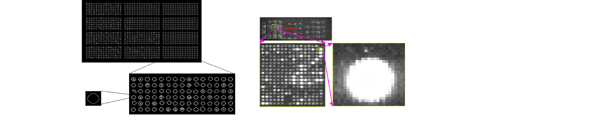

Microarray images push to their limits classical analysis methods. New approaches are thus needed to ensure accurate data extraction from these images.
Microarray image analysis
We developed an automatic non-supervised algorithm for a spot data extraction from DNA microarrays. The method is based on a split and merge algorithm, relying on an iterative Delaunay triangulation process, allowing an incremental partition of the image into homogeneous polygons. Geometric properties of triangles as well as homogeneity criteria are defined according to the specificities of microarray image signals. The method has been assessed on simulated data, and then compared with classical methods used in this field.
Analysis of gene expression data
We proposed a method based on the work of Ramsay and Silverman concerning the analysis of functional data. We considered that a gene profile is a continuous function of a “temporal” parameter, and we used a functional principal components analysis to extract the significant variations in the data and to cluster the curves according to their significant variations. We applied this method to two distinct datasets :
- the data collected during the sporulation of S. cerevisiae yeast. The dataset consisted in the expression ratios of 6118 known or predicted genes from the yeast, measured at 7 different time points (0, 30 min, 2, 5, 7, 9, 11.5 h). Chu et al. identified seven temporal patterns of induced transcription reflecting sequential progression through the sporulation.
- a cell lines dataset consisting of mRNA extracted from 60 cancer cell lines, and hybridized to DNA microarrays containing 9703 human cDNA clones. The cDNAs included about 8000 human different genes, and almost 80% of them were correctly identified. The data of interest we used here were composed of a 60× 1416 gene subset, including 1375 distinct genes (filtered using the highest variance criterion) with some repetitions. The rows to be analyzed were then the cancer cell lines, subject to the variation of the 1416 gene expressions. The high dimension parameter space prevented from a direct visual analysis and we chose to apply our method both to reduce the parameter space dimension and to exhibit common patterns of variations for cancer cell-lines For both applications, we computed the functional principal components, which shed light on the principal variations (temporal in the sporulation case, and tumoral in the second dataset). We moreover correlated our results with biological results found in the litterature
Simulation of microarray images
The analysis of microarray experiments is performed through software that preprocess the images before analyzing their content and provide a quantification of target activations in the biochip spots. But only few works nevertheless assess the efficiency of these software, in terms of data extraction and quantification. One reason explaining this fact is the lack of gold standard in this field, either numerical or physically acquired. One great challenge in microarray software assessment is thus the creation of simulated microarrays. We proposed a two-step process for the modeling of microarrays experiments. A geometrical model was first proposed, which simulated the microarray appearance and the possible spot geometries. A signal model was then added, both for the gene activation simulation and for the noise generated by the physical acquisition process.
Applications
All the previous methods have been applied to real case studies related to bioremediation and probe design for microarrays.